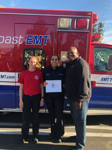

Alyssa Kumari
I am a 4th year Neuroscience major at University of California, Riverside and will graduate in June 2020.
I have worked as a Medical Scribe at Riverside University Health Systems (Riverside County Hospital) in the Emergency Department for the past 2 years.
In September of 2019 I became EMT certified and plan to work as an ER Techician this upcoming summer after graduating while I submit and wait to hear back from my medical school applications.
Experience
Training Officer
• Taught students how to take a patient's basic vitals
• Taught students the benefits of motivational interviewing for educating patients on health and nutrition
• Experience in Athena Health and Epic Health Services software systems
Biomedical Sciences Researcher
• Learn to plan and run experiments, analyze data and conclude significant findings
• Able to efficiently perform Comassie Staining, Western Immunoblotting, FCG Genotyping and Culture Prep
R'Course Instructor
• Taught other undergraduate students at UCR a 1 unit course on the topic of Structural Barriers and Determinants of Healthcare in the Inland Empire
• Taught 3 subdivisional topics on Economical, Social and Environmental factors related to heatlhcare barriers people living within the Inland Empire face daily
• Discussed problems within our current healthcare system that contribute to these barriers and discussed possible solutions to eradicate them
• Had guest speakers from the UCR School of Medicine talk about real-life problems when practicing medicine in the Inland Empire as opposed to other communities within Southern California
Education
University of California Riverside
Santa Rosa Academy
Portfolio

